用代码还原 RAG 系统的每个细节 —— 分片、索引、召回、重排、生成，五个环节逐段手写
不读全文也能知道这一期做了什么
用到的两个模型：Embedding 用 shibing624/text2vec-base-chinese（输出 768 维向量），
重排用 cross-encoder/mmarco-mMiniLMv2-L12-H384-v1，生成用 gemini-2.5-flash（免费额度）。
split，索引是模型 encode 加一次 add，
召回是一次 query，重排是一次 predict 加排序，生成就是把片段拼进 prompt 发给大模型。
按原视频章节顺序
先明确要实现的流程图，再动手写代码
RAG 是构建知识库和智能客服的首选方案，整体流程分成两个部分：
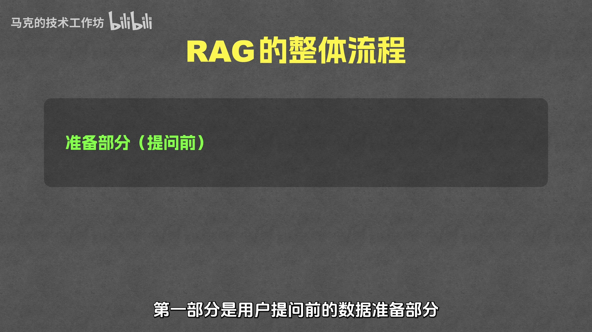
把相关资料做分片，然后把所有片段都扔给 Embedding 模型，让它给每个片段都产出一个对应的向量， 最后把向量存入向量数据库。到这一步，知识库就构建完毕，等用户来用。
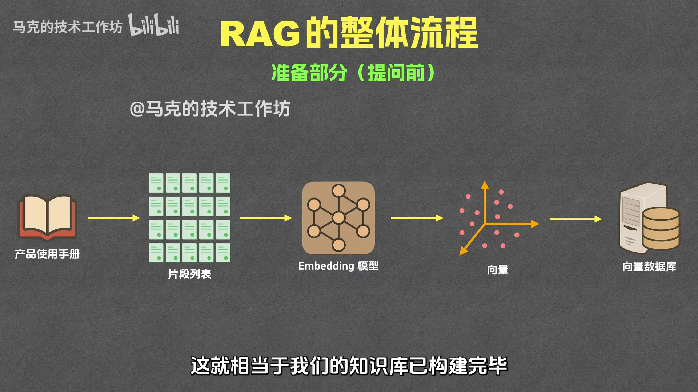
用户的问题先给到 Embedding 模型转换为向量，再把这个向量传给向量数据库， 让它找出最相似的若干片段；接着把片段送给 CrossEncoder 模型做重排，选出相关度最高的几个； 最后把筛选后的片段外加用户问题一起发给大模型，产出最终答案。
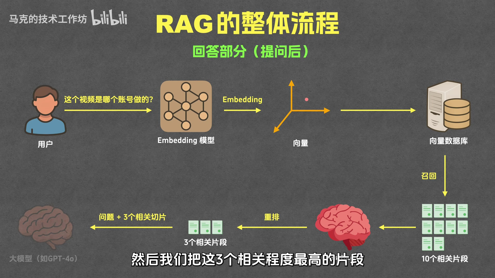
先拿代码，再备环境
视频涉及的全部代码都在作者的 GitHub 仓库里，看视频时不用着急抄代码，直接去仓库取即可。
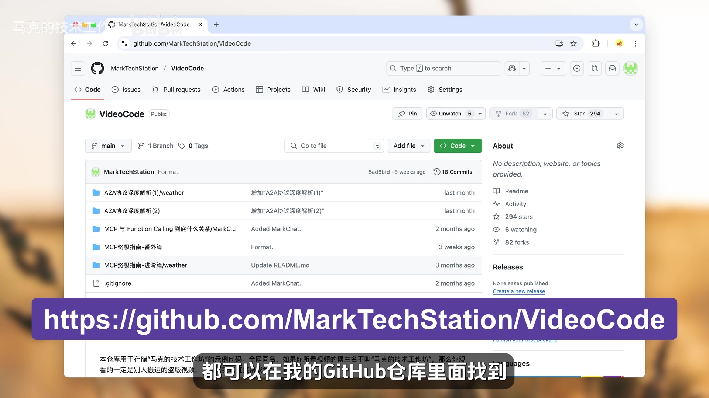
MarkTechStation/VideoCode用 Python 实现 RAG 系统开始前请确保系统里已经安装 uv 和 Jupyter Notebook 两个软件。
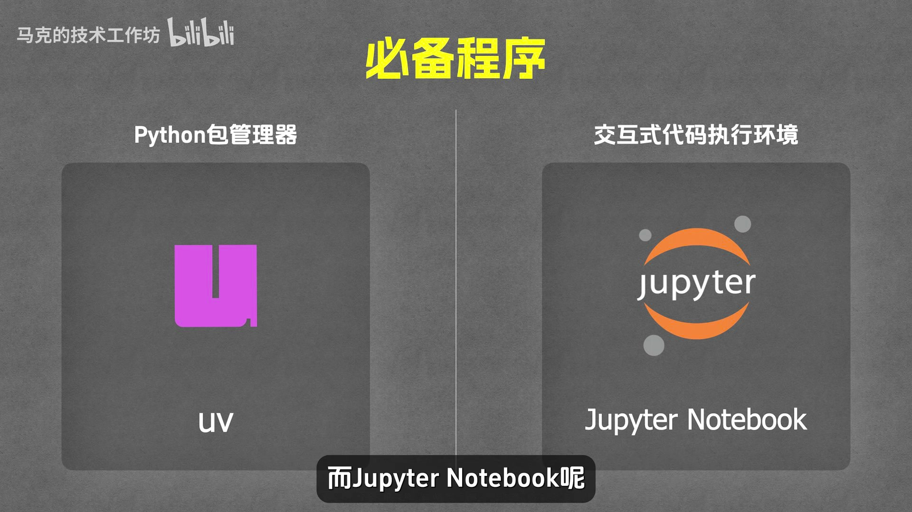
| 工具 | 定位 | 在本项目中的作用 |
|---|---|---|
| uv | Python 包管理器 | 创建项目、管理各项 Python 依赖 |
| Jupyter Notebook | 交互式代码执行环境 | 实时看到每段代码的执行结果，适合调试和验证 |
Jupyter Notebook 可以让我们实时看到每段代码的执行结果，因此在人工智能领域里很常用，很适合做各种调试和验证。
创建目录 → 初始化 → 装依赖 → 备文档 → 启动 Notebook
所谓构建项目环境，其实就是创建项目目录并且安装相关的 Python 依赖。先用 mkdir 创建一个名为 rag 的目录，后面所有代码都写到这个目录里。
mkdir rag
cd rag
# 让 uv 给这个目录做初始化
uv init .执行之后，项目目录里会多出三个文件：
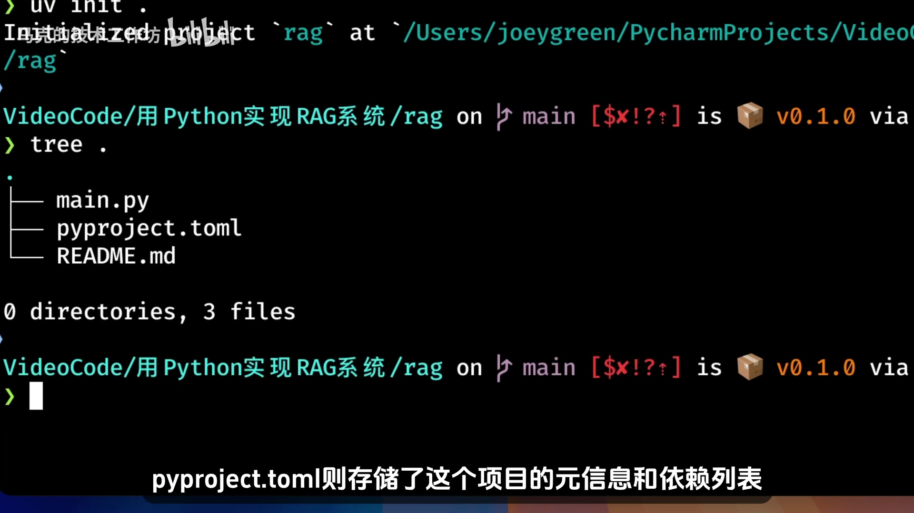
| 文件 | 作用 |
|---|---|
main.py | uv 生成的 Python 文件 —— 本项目不需要，直接删掉 |
pyproject.toml | 存储项目的元信息和依赖列表 |
README.md | uv 生成的项目说明文件 |
main.py 用不到，直接 rm main.py 删掉。
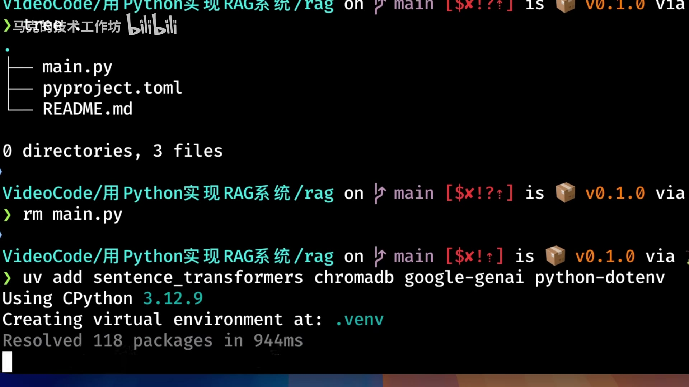
rm main.py
uv add sentence_transformers chromadb google-genai python-dotenv四个依赖各自的功能：
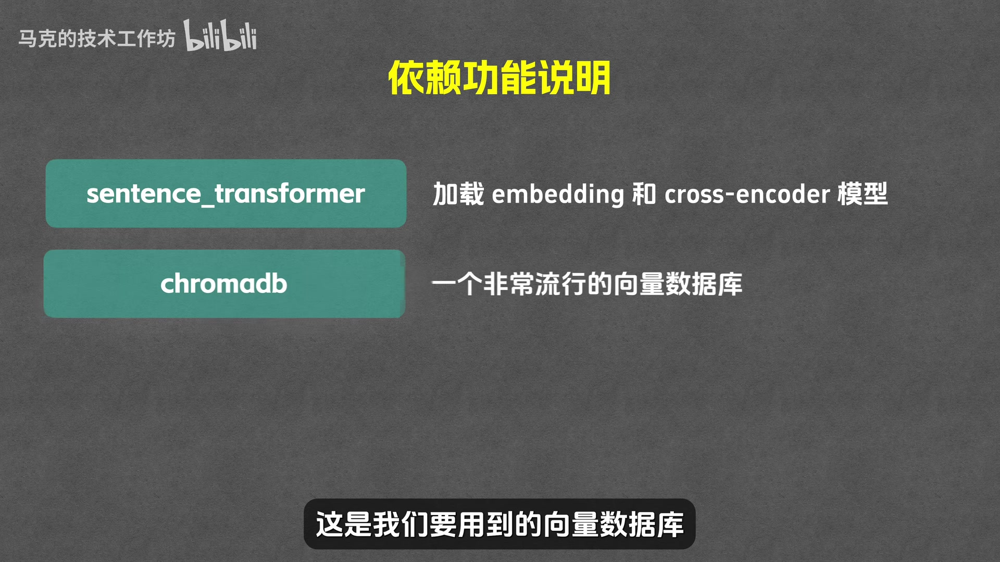
| 依赖 | 作用 |
|---|---|
sentence_transformers | 加载 Embedding 模型和 CrossEncoder 模型 |
chromadb | 非常流行的向量数据库 |
google-genai | Google 的 AI 依赖，生成答案时用其中的 gemini-2.5-flash |
python-dotenv | 把 Gemini 的 API Key 写入环境变量，供 google-genai 读取 |
RAG 系统会在知识库文档里搜索答案，所以需要先准备一份文档。为了保证测试的准确性，
作者特意写了一篇谁也不可能看过的文章 —— 讲的是哆啦A梦与大雄、超级赛亚人一起打败黑暗势力、拯救地球的故事，
放在 RAG 目录下，命名为 doc.md。
正常情况下打开 Jupyter Notebook 只需要运行 jupyter notebook，但这样做的话，
Jupyter 无法使用刚才用 uv 安装好的那些依赖。所以要用 uv 来启动：
# ❌ 这样启动用不到 uv 装的依赖
jupyter notebook
# ✅ 用 uv 启动，才能用到项目依赖
uv run jupyter notebook打开之后新建一个文件，代码就写在这个文件里面（文件名可以随意起，视频里用的是 main.ipynb）。
最终的项目结构：
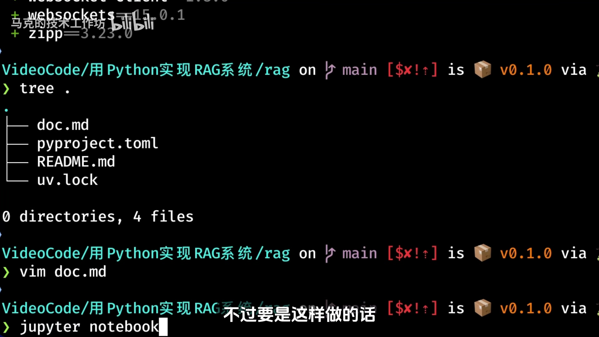
rag/
├── doc.md # 知识库文档（测试用）
├── pyproject.toml # 项目元信息与依赖列表
├── README.md # 项目说明
├── uv.lock # uv 锁定的依赖版本
└── main.ipynb # 我们写代码的地方把长文档切成片段列表
RAG 系统的第一步就是分片。先导入 List 对象用于标注函数返回结果的类型，
然后创建一个函数用来处理分片的逻辑，函数名就叫 split_into_chunks（chunk 就是片段的意思）。
from typing import List
def split_into_chunks(doc_file: str) -> List[str]:
with open(doc_file, 'r') as file:
content = file.read()
return [chunk for chunk in content.split("\n\n")]
chunks = split_into_chunks("doc.md")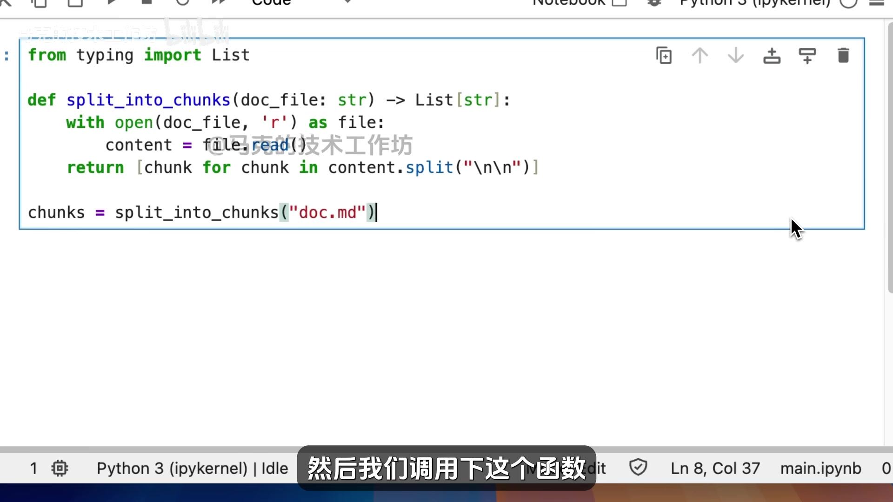
函数说明：
doc_file：文档名，调用时把 doc.md 传进来content 变量，然后按空行（\n\n）来拆分调用这个函数并循环遍历拿到所有片段，把片段的编号和内容都打印出来，验证结果是否符合预期。
作为知识库的那篇测试文章长这样：
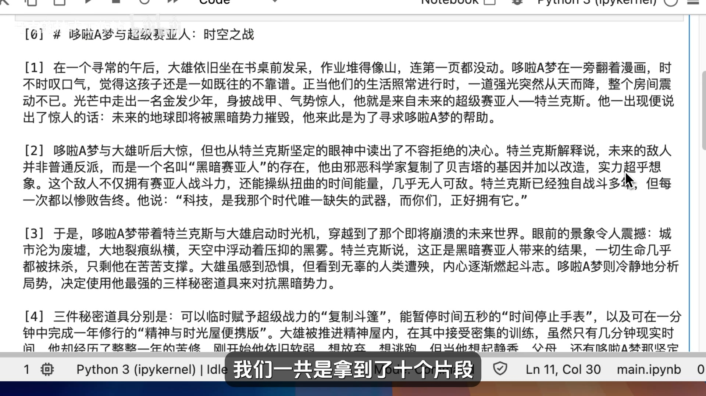
片段转向量，再存进向量数据库
先引入 SentenceTransformer，然后用它加载一个 Embedding 模型。
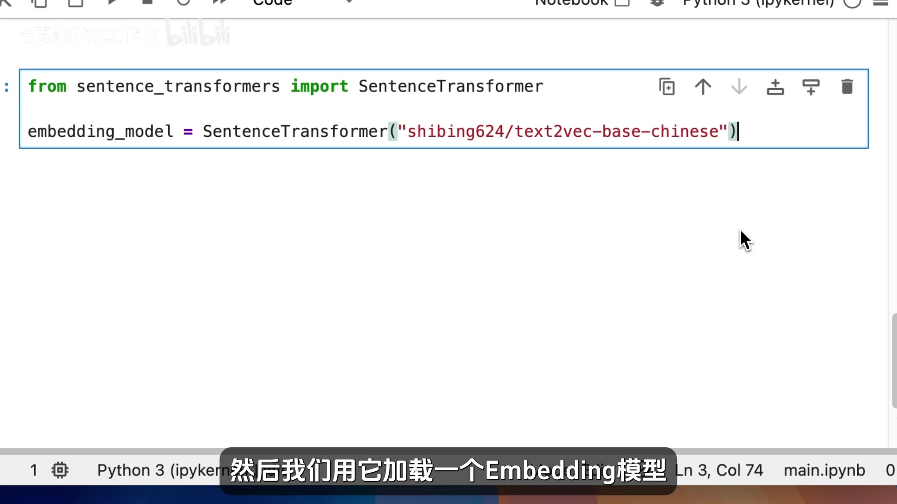
from sentence_transformers import SentenceTransformer
embedding_model = SentenceTransformer("shibing624/text2vec-base-chinese")之后写一个函数 embed_chunk，用来获取某个给定片段对应的向量。
其中的 chunk 参数就是片段的内容，返回的数字列表就是对应的向量。
def embed_chunk(chunk: str) -> List[float]:
embedding = embedding_model.encode(chunk)
return embedding.tolist()
# 测试：确认向量维度
test_embedding = embed_chunk("测试内容")
print(len(test_embedding))
print(test_embedding)执行结果可以看出，这是一个 768 维的向量，后面就是具体的向量值：
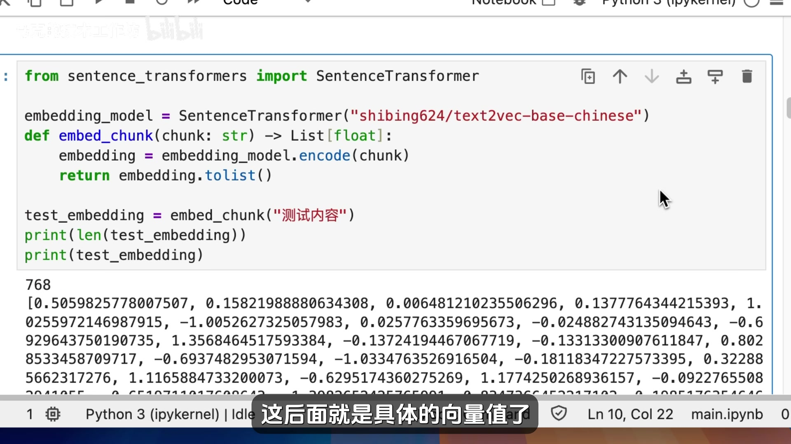
循环调用刚才写的 embed_chunk 函数，给所有的片段都生成一个对应的向量，
把所有片段向量值都放进一个叫做 embeddings 的变量中 —— 它是一个列表，
其中每一个元素都代表对应片段的向量值。
embeddings = [embed_chunk(chunk) for chunk in chunks]
print(len(embeddings)) # 10 —— 对应 10 个片段
print(embeddings[0]) # 第一个片段的向量值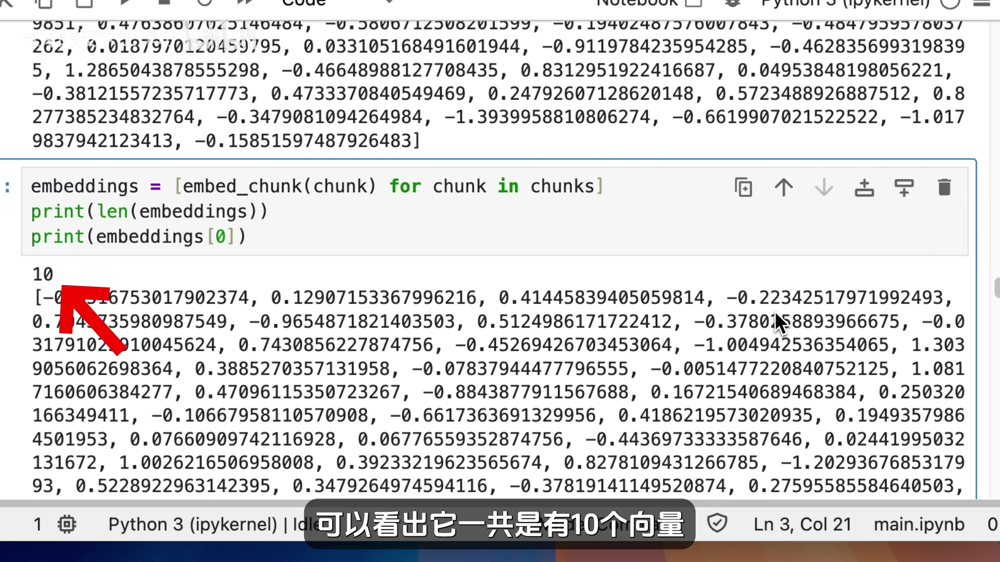
向量值求出来了，接下来就需要把这些向量存入到向量数据库中。这里选用的向量数据库是 ChromaDB。
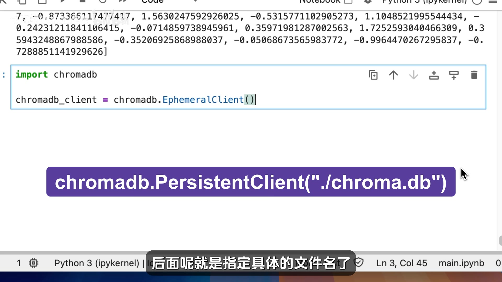
import chromadb
chromadb_client = chromadb.EphemeralClient()
chromadb_collection = chromadb_client.get_or_create_collection(name="default")chromadb.PersistentClient("./chroma.db")chroma.db 文件中Collection 是 ChromaDB 的概念，可以把它理解为传统数据库里面的表格。
接着写一个函数，把所有的片段内容和对应的向量都存到这个数据库中：
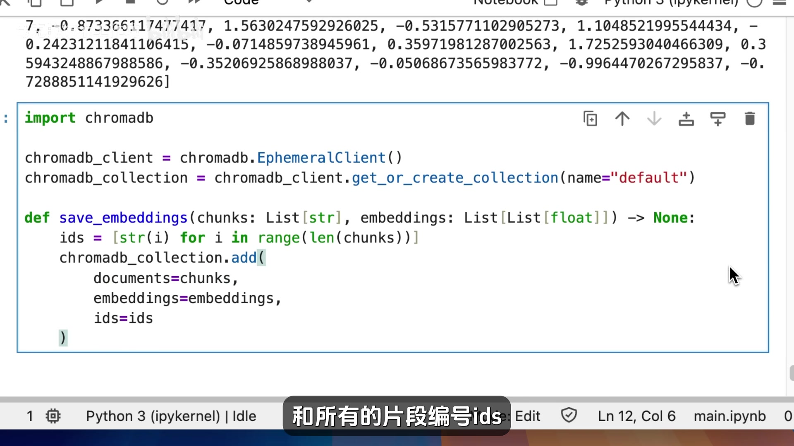
def save_embeddings(chunks: List[str], embeddings: List[List[float]]) -> None:
ids = [str(i) for i in range(len(chunks))]
chromadb_collection.add(
documents=chunks,
embeddings=embeddings,
ids=ids
)
save_embeddings(chunks, embeddings)这个函数有两个参数，其中 chunks 是片段内容列表，embeddings 就是对应的片段向量列表，它们的长度都是 10。
在函数内部，首先要生成一个 ids 变量，它的值就是从 0 到 9 的一个字符串列表。
因为 ChromaDB 要求每一个记录都要有一个 ID，所以需要定义这个变量，它就代表了每个记录的 ID。
定义好 IDs 之后，把所有的片段内容、所有的片段向量和所有的片段编号一起传给 ChromaDB。
Failed to send telemetry event ... capture() takes 1 positional argument but 3 were given 错误信息。
这是 ChromaDB 与其他依赖版本没对齐导致的，不影响正常使用，测试时这个问题大概率已经被修复掉了。
到这里，索引这一步就算结束了。以上所有内容都发生在用户提问前。
用向量相似度捞出候选片段
下面处理用户提问之后所发生的事情，分别是召回、重排和生成。
首先定义一个函数叫做 retrieve，专门用作召回：
def retrieve(query: str, top_k: int) -> List[str]:
query_embedding = embed_chunk(query)
results = chromadb_collection.query(
query_embeddings=[query_embedding],
n_results=top_k
)
return results['documents'][0]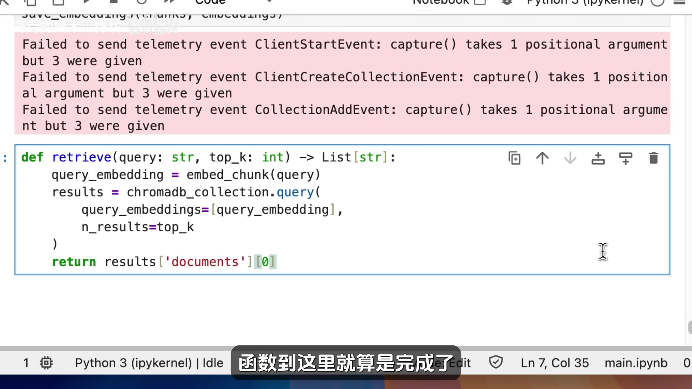
函数说明：
query，以及最终要召回的记录数量 top_ktop_k 相同embed_chunk 把用户的问题转换成向量，
然后把这个向量传入 ChromaDB，查询与用户问题最为相似的前 top_k 个结果，再返回片段列表输入问题：「哆啦A梦使用的三个秘密道具分别是什么」，然后调用 retrieve 获取与这个问题最为相关的 5 个片段并打印出来。
query = "哆啦A梦使用的三个秘密道具分别是什么"
retrieved_chunks = retrieve(query, 5)
for i, chunk in enumerate(retrieved_chunks):
print(f"[{i}] {chunk}\n")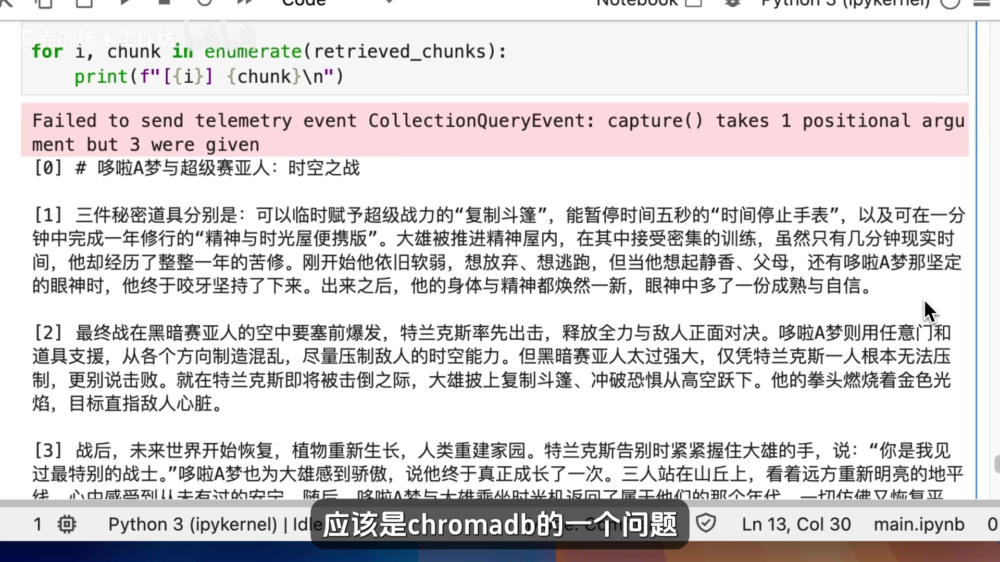
可以看出它一共召回了 5 个片段，跟要求一致。我们的答案就在这些片段里面， 但是这个片段没有放在最上面 —— 向量数据库认为标题那一条是最为匹配的。
用 CrossEncoder 重新打分排序
重排阶段需要的模型是 CrossEncoder，所以先引入 sentence_transformers 的 CrossEncoder 包，
然后写重排函数 rerank。
from sentence_transformers import CrossEncoder
def rerank(query: str, retrieved_chunks: List[str], top_k: int) -> List[str]:
cross_encoder = CrossEncoder('cross-encoder/mmarco-mMiniLMv2-L12-H384-v1')
pairs = [(query, chunk) for chunk in retrieved_chunks]
scores = cross_encoder.predict(pairs)
chunk_with_score_list = [(chunk, score)
for chunk, score in zip(retrieved_chunks, scores)]
chunk_with_score_list.sort(key=lambda pair: pair[1], reverse=True)
return [chunk for chunk, _ in chunk_with_score_list][:top_k]这个函数一共有三个参数：
queryretrieved_chunkstop_k函数返回一个列表，就是重排后保留的片段列表，top_k 有多大，这个列表里面就有多少个元素。
在函数内部，首先创建一个 CrossEncoder 模型，然后创建一个列表，这个列表里面的每一个元素都是 「用户问题 + 一个召回的片段」组成的 pair，然后把这个列表发给 CrossEncoder 模型， 让它给每一个片段打分，分值就代表了用户问题与对应片段内容的相似程度。
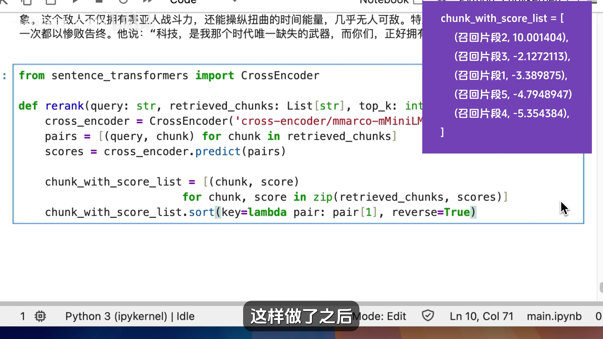
得到的分数大概是这样：
chunk_with_score_list = [
(召回片段2, 10.001404),
(召回片段3, -2.1272113),
(召回片段1, -3.389875),
(召回片段5, -4.7948947),
(召回片段4, -5.354384),
]然后把召回的片段和分数放在一起做成一个列表，之后把这个列表按分数倒序排序。 这样做之后，列表里面的第一个元素就是与用户问题最为相关的片段加上对应的匹配分数，第二个元素、第三个以此类推。
拿到这个列表之后，再单独取出其中的片段内容部分，把分数扔掉，然后再取前 top_k 个结果，这就是我们的答案了。
reranked_chunks = rerank(query, retrieved_chunks, 3)
for i, chunk in enumerate(reranked_chunks):
print(f"[{i}] {chunk}\n")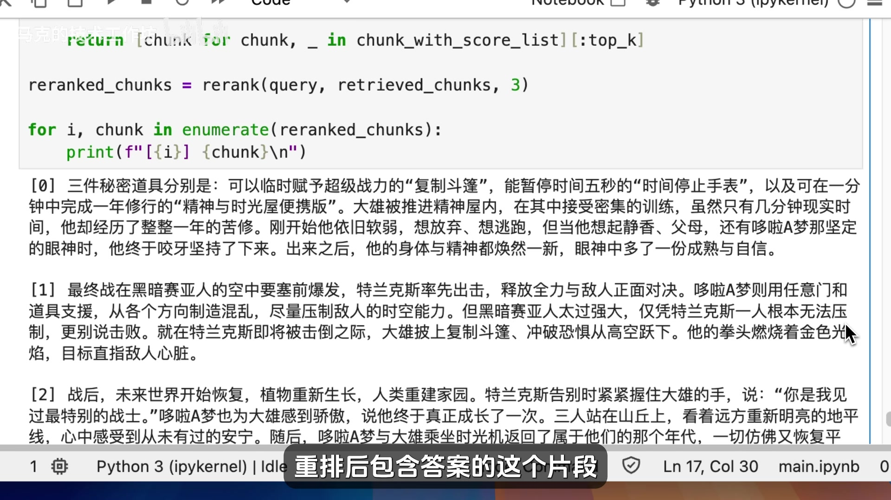
把片段拼进 prompt 交给大模型
重排结束，最后就来到了生成阶段。生成阶段需要一个大模型，这里选用的模型是 Gemini 2.5 Flash， 它最大的优点就是不要钱。不过需要先注册一个 Gemini 的 API Key 才能使用。
获取 API Key 之后，需要在项目目录下新建一个 .env 文件，在里面输入如下内容：
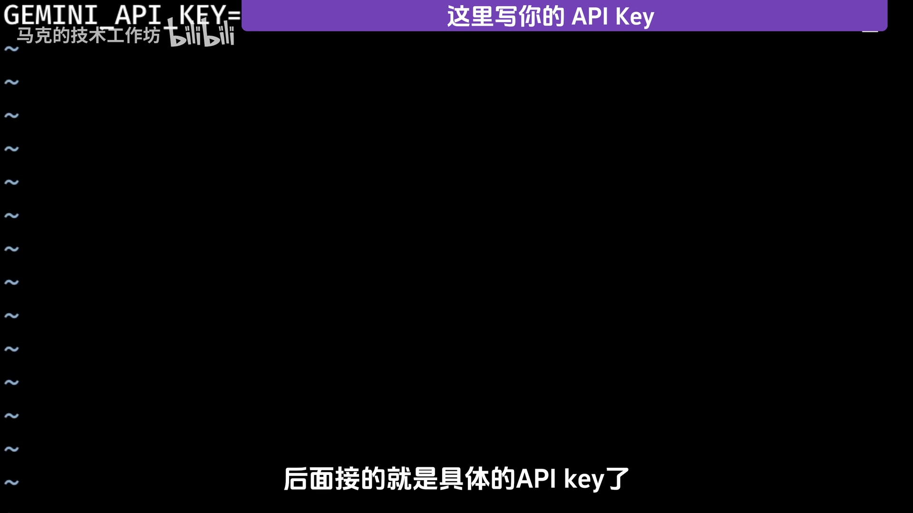
# .env
GEMINI_API_KEY=这里写你的 API Key.env 文件里放的是明文密钥，不要提交到 Git 仓库，
记得把它加进 .gitignore。
回到 Jupyter Notebook 继续写代码。首先把用到的对象导入进来，然后执行 load_dotenv() ——
这个函数的功能是把刚才写在 .env 里面的 GEMINI_API_KEY 变成一个环境变量。
from dotenv import load_dotenv
from google import genai
load_dotenv()
google_client = genai.Client().env 文件。
.env 文件只是个中介 —— 由 load_dotenv() 把里面的值搬进环境变量。
这样做的好处是密钥不写在代码里，代码可以安全地分享和提交。
做好必要的准备之后，就可以写 generate 函数了。这个函数有两个参数，
分别是用户问题 query 和重排后得到的片段列表 chunks，它会返回最终的答案。
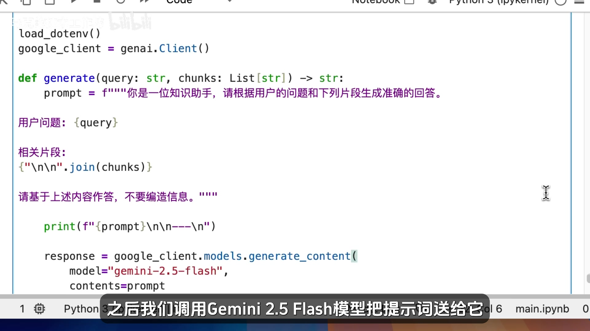
def generate(query: str, chunks: List[str]) -> str:
prompt = f"""你是一位知识助手，请根据用户的问题和下列片段生成准确的回答。
用户问题：{query}
相关片段：
{"\n\n".join(chunks)}
请基于上述内容作答，不要编造信息。"""
print(f"{prompt}\n\n---\n")
response = google_client.models.generate_content(
model="gemini-2.5-flash",
contents=prompt
)
return response.text在函数内部，首先写好要送给大模型的 prompt —— 用户的问题写在这里，相关的片段写在这里， 然后我们把 prompt 打印出来看一下。之后调用 Gemini 2.5 Flash 模型，把提示词送给它，让它生成最终的答案，最后将答案返回。
answer = generate(query, reranked_chunks)
print(answer)前半部分是我们给模型的提示词，后面的这一段就是模型的最终返回了：
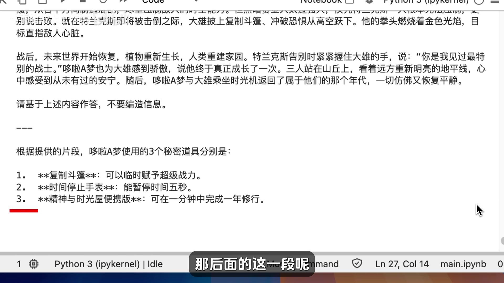
整个系统的全貌
# ---------- 准备部分（提问前，跑一次） ----------
chunks = split_into_chunks("doc.md") # 1. 分片
embeddings = [embed_chunk(c) for c in chunks] # 2. 向量化
save_embeddings(chunks, embeddings) # 3. 存入向量库
# ---------- 回答部分（提问后，每次提问都跑） ----------
query = "哆啦A梦使用的三个秘密道具分别是什么"
retrieved_chunks = retrieve(query, 5) # 4. 召回 top-5
reranked_chunks = rerank(query, retrieved_chunks, 3) # 5. 重排 top-3
answer = generate(query, reranked_chunks) # 6. 生成答案
print(answer)| 环节 | 选用的工具/模型 |
|---|---|
| 运行环境 | uv + Jupyter Notebook |
| Embedding 模型 | shibing624/text2vec-base-chinese（768 维） |
| 向量数据库 | ChromaDB（视频用 EphemeralClient） |
| 重排模型 | cross-encoder/mmarco-mMiniLMv2-L12-H384-v1 |
| 生成模型 | gemini-2.5-flash（免费额度） |
| 密钥管理 | python-dotenv + .env |
动手前先看这张表
| 问题 | 答案 |
|---|---|
| 代码在哪里？ | github.com/MarkTechStation/VideoCode |
| 需要装什么工具？ | uv（包管理）+ Jupyter Notebook（交互执行） |
| 怎么初始化项目？ | mkdir rag && cd rag && uv init .，然后删掉 main.py |
| 装哪四个依赖？ | sentence_transformers、chromadb、google-genai、python-dotenv |
| 怎么启动 Notebook 才能用上依赖？ | uv run jupyter notebook（不能直接 jupyter notebook） |
| 分片怎么做？ | 读文件后按空行 \n\n 切分，得到 10 个片段 |
| 用哪个 Embedding 模型？ | shibing624/text2vec-base-chinese，输出 768 维 |
| 第一次运行为什么要等？ | 要从 HuggingFace 拉取约 400 MB 的模型 |
| 用哪个向量数据库？ | ChromaDB；内存用 EphemeralClient，落盘用 PersistentClient |
| ChromaDB 的 telemetry 报错要紧吗？ | 不要紧，是版本没对齐，不影响使用 |
| 召回用哪个函数？ | collection.query(query_embeddings=..., n_results=top_k) |
| 召回的排序为什么不准？ | 向量相似度只看「分别编码后的距离」，无法建模问题与片段的交互 |
| 重排为什么更准？ | CrossEncoder 把「问题 + 片段」拼在一起同时编码，能直接建模相关性 |
| 重排怎么排序？ | 片段与分数配对成列表，按分数 reverse=True 倒序，再取前 top_k |
| 生成用哪个模型？ | gemini-2.5-flash（免费，需注册 API Key） |
| API Key 怎么放？ | 写进 .env，用 load_dotenv() 搬进环境变量；不要提交到 Git |
| 最终验证结果如何？ | 模型正确答出三件秘密道具，证明整条链路生效 |
视频中出现的关键概念
| 术语 | 英文 | 解释 |
|---|---|---|
| RAG | Retrieval-Augmented Generation | 检索增强生成：先检索资料再让大模型作答 |
| 分片 | Chunking | 把长文档切成若干片段，作为检索的最小单位 |
| 索引 | Indexing | 把片段转成向量并存入向量数据库 |
| 召回 | Retrieval | 按向量相似度找出与问题最相关的若干片段 |
| 重排 | Rerank | 用 CrossEncoder 对召回的候选片段重新打分排序 |
| 生成 | Generation | 把问题与筛选后的片段交给大模型产出答案 |
| Embedding | Embedding | 把文本映射成定长向量，使语义相近的文本向量也相近 |
| CrossEncoder | Cross-Encoder | 把「问题+片段」成对输入一起编码的打分模型，精度高但更慢 |
| 向量数据库 | Vector Database | 专门存储与检索向量的数据库，本项目用 ChromaDB |
| Collection | Collection | ChromaDB 中的概念，可类比传统数据库里的「表」 |
| top_k | top-k | 召回或重排后保留的片段数量 |
| uv | uv | 用 Rust 写的 Python 包管理器，可创建项目并管理依赖 |
| Jupyter Notebook | Jupyter Notebook | 交互式代码执行环境，可逐段运行并立即看到输出 |
| doc.md | — | 本项目用作知识库的测试文档（哆啦A梦与超级赛亚人） |